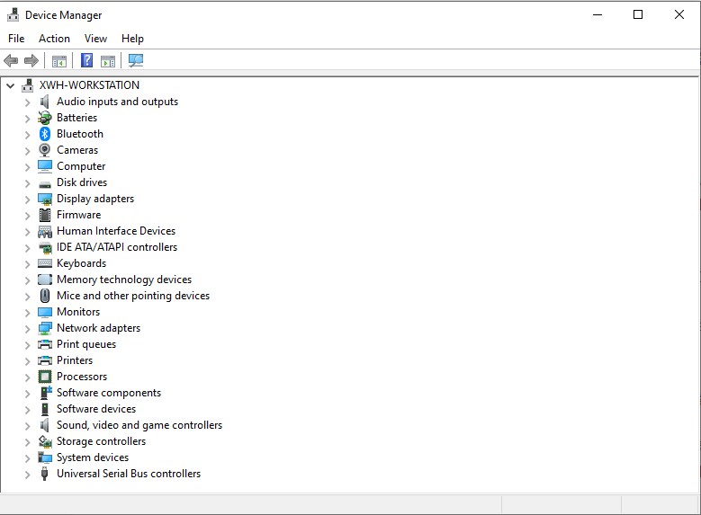

- 00 开篇词 为什么你需要学习计算机组成原理？.md.html
- 01 冯·诺依曼体系结构：计算机组成的金字塔.md.html
- 02 给你一张知识地图，计算机组成原理应该这么学.md.html
- 03 通过你的CPU主频，我们来谈谈“性能”究竟是什么？.md.html
- 04 穿越功耗墙，我们该从哪些方面提升“性能”？.md.html
- 05 计算机指令：让我们试试用纸带编程.md.html
- 06 指令跳转：原来if...else就是goto.md.html
- 07 函数调用：为什么会发生stack overflow？.md.html
- 08 ELF和静态链接：为什么程序无法同时在Linux和Windows下运行？.md.html
- 09 程序装载：“640K内存”真的不够用么？.md.html
- 10 动态链接：程序内部的“共享单车”.md.html
- 11 二进制编码：“手持两把锟斤拷，口中疾呼烫烫烫”？.md.html
- 12 理解电路：从电报机到门电路，我们如何做到“千里传信”？.md.html
- 13 加法器：如何像搭乐高一样搭电路（上）？.md.html
- 14 乘法器：如何像搭乐高一样搭电路（下）？.md.html
- 15 浮点数和定点数（上）：怎么用有限的Bit表示尽可能多的信息？.md.html
- 16 浮点数和定点数（下）：深入理解浮点数到底有什么用？.md.html
- 17 建立数据通路（上）：指令加运算=CPU.md.html
- 18 建立数据通路（中）：指令加运算=CPU.md.html
- 19 建立数据通路（下）：指令加运算=CPU.md.html
- 20 面向流水线的指令设计（上）：一心多用的现代CPU.md.html
- 21 面向流水线的指令设计（下）：奔腾4是怎么失败的？.md.html
- 22 冒险和预测（一）：hazard是“危”也是“机”.md.html
- 23 冒险和预测（二）：流水线里的接力赛.md.html
- 24 冒险和预测（三）：CPU里的“线程池”.md.html
- 25 冒险和预测（四）：今天下雨了，明天还会下雨么？.md.html
- 26 Superscalar和VLIW：如何让CPU的吞吐率超过1？.md.html
- 27 SIMD：如何加速矩阵乘法？.md.html
- 28 异常和中断：程序出错了怎么办？.md.html
- 29 CISC和RISC：为什么手机芯片都是ARM？.md.html
- 30 GPU（上）：为什么玩游戏需要使用GPU？.md.html
- 31 GPU（下）：为什么深度学习需要使用GPU？.md.html
- 32 FPGA、ASIC和TPU（上）：计算机体系结构的黄金时代.md.html
- 33 解读TPU：设计和拆解一块ASIC芯片.md.html
- 34 理解虚拟机：你在云上拿到的计算机是什么样的？.md.html
- 35 存储器层次结构全景：数据存储的大金字塔长什么样？.md.html
- 36 局部性原理：数据库性能跟不上，加个缓存就好了？.md.html
- 37 理解CPU Cache（上）：“4毫秒”究竟值多少钱？.md.html
- 38 高速缓存（下）：你确定你的数据更新了么？.md.html
- 39 MESI协议：如何让多核CPU的高速缓存保持一致？.md.html
- 40 理解内存（上）：虚拟内存和内存保护是什么？.md.html
- 41 理解内存（下）：解析TLB和内存保护.md.html
- 42 总线：计算机内部的高速公路.md.html
- 43 输入输出设备：我们并不是只能用灯泡显示“0”和“1”.md.html
- 44 理解IO_WAIT：IO性能到底是怎么回事儿？.md.html
- 45 机械硬盘：Google早期用过的“黑科技”.md.html
- 46 SSD硬盘（上）：如何完成性能优化的KPI？.md.html
- 47 SSD硬盘（下）：如何完成性能优化的KPI？.md.html
- 48 DMA：为什么Kafka这么快？.md.html
- 49 数据完整性（上）：硬件坏了怎么办？.md.html
- 50 数据完整性（下）：如何还原犯罪现场？.md.html
- 51 分布式计算：如果所有人的大脑都联网会怎样？.md.html
- 52 设计大型DMP系统（上）：MongoDB并不是什么灵丹妙药.md.html
- 53 设计大型DMP系统（下）：SSD拯救了所有的DBA.md.html
- 54 理解Disruptor（上）：带你体会CPU高速缓存的风驰电掣.md.html
- 55 理解Disruptor（下）：不需要换挡和踩刹车的CPU，有多快？.md.html
- 结束语 知也无涯，愿你也享受发现的乐趣.md.html
- 捐赠
43 输入输出设备：我们并不是只能用灯泡显示“0”和“1”
我们在前面的章节搭建了最简单的电路，在这里面，计算机的输入设备就是一个一个开关，输出设备呢，是一个一个灯泡。的确，早期发展的时候，计算机的核心是做“计算”。我们从“计算机”这个名字上也能看出这一点。不管是中文名字“计算机”，还是英文名字“Computer”，核心都是在”计算“这两个字上。不过，到了今天，这些“计算”的工作，更多的是一个幕后工作。
我们无论是使用自己的 PC，还是智能手机，大部分时间都是在和计算机进行各种“交互操作”。换句话说，就是在和输入输出设备打交道。这些输入输出设备也不再是一个一个开关，或者一个一个灯泡。你在键盘上直接敲击的都是字符，而不是“0”和“1”，你在显示器上看到的，也是直接的图形或者文字的画面，而不是一个一个闪亮或者关闭的灯泡。想要了解这其中的关窍，那就请你和我一起来看一看，计算机里面的输入输出设备。
接口和设备：经典的适配器模式
我们在前面讲解计算机的五大组成部分的时候，我看到这样几个留言。
一个同学问，像蓝牙、WiFi 无线网卡这样的设备也是输入输出设备吗？还有一个同学问，我们的输入输出设备的寄存器在哪里？到底是在主板上，还是在硬件设备上？
这两个问题问得很好。其实你只要理解了这两个问题，也就理解输入输出设备是怎么回事儿了。
实际上，输入输出设备，并不只是一个设备。大部分的输入输出设备，都有两个组成部分。第一个是它的接口（Interface），第二个才是实际的 I/O 设备（Actual I/O Device）。我们的硬件设备并不是直接接入到总线上和 CPU 通信的，而是通过接口，用接口连接到总线上，再通过总线和 CPU 通信。

SATA 硬盘，上面的整个绿色电路板和黄色的齿状部分就是接口电路，黄色齿状的就是和主板对接的接口，绿色的电路板就是控制电路
你平时听说的并行接口（Parallel Interface）、串行接口（Serial Interface）、USB 接口，都是计算机主板上内置的各个接口。我们的实际硬件设备，比如，使用并口的打印机、使用串口的老式鼠标或者使用 USB 接口的 U 盘，都要插入到这些接口上，才能和 CPU 工作以及通信的。
接口本身就是一块电路板。CPU 其实不是和实际的硬件设备打交道，而是和这个接口电路板打交道。我们平时说的，设备里面有三类寄存器，其实都在这个设备的接口电路上，而不在实际的设备上。
那这三类寄存器是哪三类寄存器呢？它们分别是状态寄存器（Status Register）、 命令寄存器（Command Register）以及数据寄存器（Data Register），
除了内置在主板上的接口之外，有些接口可以集成在设备上。你可能都没有见过老一点儿的硬盘，我来简单给你介绍一下。
上世纪 90 年代的时候，大家用的硬盘都叫作IDE 硬盘。这个 IDE 不是像 IntelliJ 或者 WebStorm 这样的软件开发集成环境（Integrated Development Environment）的 IDE，而是代表着集成设备电路（Integrated Device Electronics）。也就是说，设备的接口电路直接在设备上，而不在主板上。我们需要通过一个线缆，把集成了接口的设备连接到主板上去。

我自己使用的 PC 的设备管理器
把接口和实际设备分离，这个做法实际上来自于计算机走向开放架构（Open Architecture）的时代。
当我们要对计算机升级，我们不会扔掉旧的计算机，直接买一台全新的计算机，而是可以单独升级硬盘这样的设备。我们把老硬盘从接口上拿下来，换一个新的上去就好了。各种输入输出设备的制造商，也可以根据接口的控制协议，来设计和制造硬盘、鼠标、键盘、打印机乃至其他种种外设。正是这样的分工协作，带来了 PC 时代的繁荣。
其实，在软件的设计模式里也有这样的思路。面向对象里的面向接口编程的接口，就是 Interface。如果你做 iOS 的开发，Objective-C 里面的 Protocol 其实也是这个意思。而 Adaptor 设计模式，更是一个常见的、用来解决不同外部应用和系统“适配”问题的方案。可以看到，计算机的软件和硬件，在逻辑抽象上，其实是相通的。
如果你用的是 Windows 操作系统，你可以打开设备管理器，里面有各种各种的 Devices（设备）、Controllers（控制器）、Adaptors（适配器）。这些，其实都是对于输入输出设备不同角度的描述。被叫作 Devices，看重的是实际的 I/O 设备本身。被叫作 Controllers，看重的是输入输出设备接口里面的控制电路。而被叫作 Adaptors，则是看重接口作为一个适配器后面可以插上不同的实际设备。
CPU 是如何控制 I/O 设备的？
无论是内置在主板上的接口，还是集成在设备上的接口，除了三类寄存器之外，还有对应的控制电路。正是通过这个控制电路，CPU 才能通过向这个接口电路板传输信号，来控制实际的硬件。
我们先来看一看，硬件设备上的这些寄存器有什么用。这里，我拿我们平时用的打印机作为例子。

- 首先是数据寄存器（Data Register）。CPU 向 I/O 设备写入需要传输的数据，比如要打印的内容是“GeekTime”，我们就要先发送一个“G”给到对应的 I/O 设备。
- 然后是命令寄存器（Command Register）。CPU 发送一个命令，告诉打印机，要进行打印工作。这个时候，打印机里面的控制电路会做两个动作。第一个，是去设置我们的状态寄存器里面的状态，把状态设置成 not-ready。第二个，就是实际操作打印机进行打印。
- 而状态寄存器（Status Register），就是告诉了我们的 CPU，现在设备已经在工作了，所以这个时候，CPU 你再发送数据或者命令过来，都是没有用的。直到前面的动作已经完成，状态寄存器重新变成了 ready 状态，我们的 CPU 才能发送下一个字符和命令。
当然，在实际情况中，打印机里通常不只有数据寄存器，还会有数据缓冲区。我们的 CPU 也不是真的一个字符一个字符这样交给打印机去打印的，而是一次性把整个文档传输到打印机的内存或者数据缓冲区里面一起打印的。不过，通过上面这个例子，相信你对 CPU 是怎么操作 I/O 设备的，应该有所了解了。
信号和地址：发挥总线的价值
搞清楚了实际的 I/O 设备和接口之间的关系，一个新的问题就来了。那就是，我们的 CPU 到底要往总线上发送一个什么样的命令，才能和 I/O 接口上的设备通信呢？
CPU 和 I/O 设备的通信，一样是通过 CPU 支持的机器指令来执行的。
如果你回头去看一看第 5 讲，MIPS 的机器指令的分类，你会发现，我们并没有一种专门的和 I/O 设备通信的指令类型。那么，MIPS 的 CPU 到底是通过什么样的指令来和 I/O 设备来通信呢？
答案就是，和访问我们的主内存一样，使用“内存地址”。为了让已经足够复杂的 CPU 尽可能简单，计算机会把 I/O 设备的各个寄存器，以及 I/O 设备内部的内存地址，都映射到主内存地址空间里来。主内存的地址空间里，会给不同的 I/O 设备预留一段一段的内存地址。CPU 想要和这些 I/O 设备通信的时候呢，就往这些地址发送数据。这些地址信息，就是通过上一讲的地址线来发送的，而对应的数据信息呢，自然就是通过数据线来发送的了。
而我们的 I/O 设备呢，就会监控地址线，并且在 CPU 往自己地址发送数据的时候，把对应的数据线里面传输过来的数据，接入到对应的设备里面的寄存器和内存里面来。CPU 无论是向 I/O 设备发送命令、查询状态还是传输数据，都可以通过这样的方式。这种方式呢，叫作内存映射IO（Memory-Mapped I/O，简称 MMIO）。

那么，MMIO 是不是唯一一种 CPU 和设备通信的方式呢？答案是否定的。精简指令集 MIPS 的 CPU 特别简单，所以这里只有 MMIO。而我们有 2000 多个指令的 Intel X86 架构的计算机，自然可以设计专门的和 I/O 设备通信的指令，也就是 in 和 out 指令。
Intel CPU 虽然也支持 MMIO，不过它还可以通过特定的指令，来支持端口映射 I/O（Port-Mapped I/O，简称 PMIO）或者也可以叫独立输入输出（Isolated I/O）。
其实 PMIO 的通信方式和 MMIO 差不多，核心的区别在于，PMIO 里面访问的设备地址，不再是在内存地址空间里面，而是一个专门的端口（Port）。这个端口并不是指一个硬件上的插口，而是和 CPU 通信的一个抽象概念。
无论是 PMIO 还是 MMIO，CPU 都会传送一条二进制的数据，给到 I/O 设备的对应地址。设备自己本身的接口电路，再去解码这个数据。解码之后的数据呢，就会变成设备支持的一条指令，再去通过控制电路去操作实际的硬件设备。对于 CPU 来说，它并不需要关心设备本身能够支持哪些操作。它要做的，只是在总线上传输一条条数据就好了。
这个，其实也有点像我们在设计模式里面的 Command 模式。我们在总线上传输的，是一个个数据对象，然后各个接受这些对象的设备，再去根据对象内容，进行实际的解码和命令执行。

这是我计算机上，设备管理器里显卡设备的资源信息
这是一张我自己的显卡，在设备管理器里面的资源（Resource）信息。你可以看到，里面既有 Memory Range，这个就是设备对应映射到的内存地址，也就是我们上面所说的 MMIO 的访问方式。同样的，里面还有 I/O Range，这个就是我们上面所说的 PMIO，也就是通过端口来访问 I/O 设备的地址。最后，里面还有一个 IRQ，也就是会来自于这个设备的中断信号了。
总结延伸
好了，讲到这里，不知道，现在你是不是可以把 CPU 的指令、总线和 I/O 设备之间的关系彻底串联起来了呢？我来带你回顾一下。
CPU 并不是发送一个特定的操作指令来操作不同的 I/O 设备。因为如果是那样的话，随着新的 I/O 设备的发明，我们就要去扩展 CPU 的指令集了。
在计算机系统里面，CPU 和 I/O 设备之间的通信，是这么来解决的。
首先，在 I/O 设备这一侧，我们把 I/O 设备拆分成，能和 CPU 通信的接口电路，以及实际的 I/O 设备本身。接口电路里面有对应的状态寄存器、命令寄存器、数据寄存器、数据缓冲区和设备内存等等。接口电路通过总线和 CPU 通信，接收来自 CPU 的指令和数据。而接口电路中的控制电路，再解码接收到的指令，实际去操作对应的硬件设备。
而在 CPU 这一侧，对 CPU 来说，它看到的并不是一个个特定的设备，而是一个个内存地址或者端口地址。CPU 只是向这些地址传输数据或者读取数据。所需要的指令和操作内存地址的指令其实没有什么本质差别。通过软件层面对于传输的命令数据的定义，而不是提供特殊的新的指令，来实际操作对应的 I/O 硬件。
推荐阅读
想要进一步了解 CPU 和 I/O 设备交互的技术细节，我推荐你去看一看北京大学在 Coursera 上的视频课程，《计算机组成》第 10 周的内容。这个课程在 Coursera 上是中文的，而且可以免费观看。相信这一个小时的视频课程，对于你深入理解输入输出设备，会很有帮助。
© 2019 - 2023 Liangliang Lee. Powered by gin and hexo-theme-book.